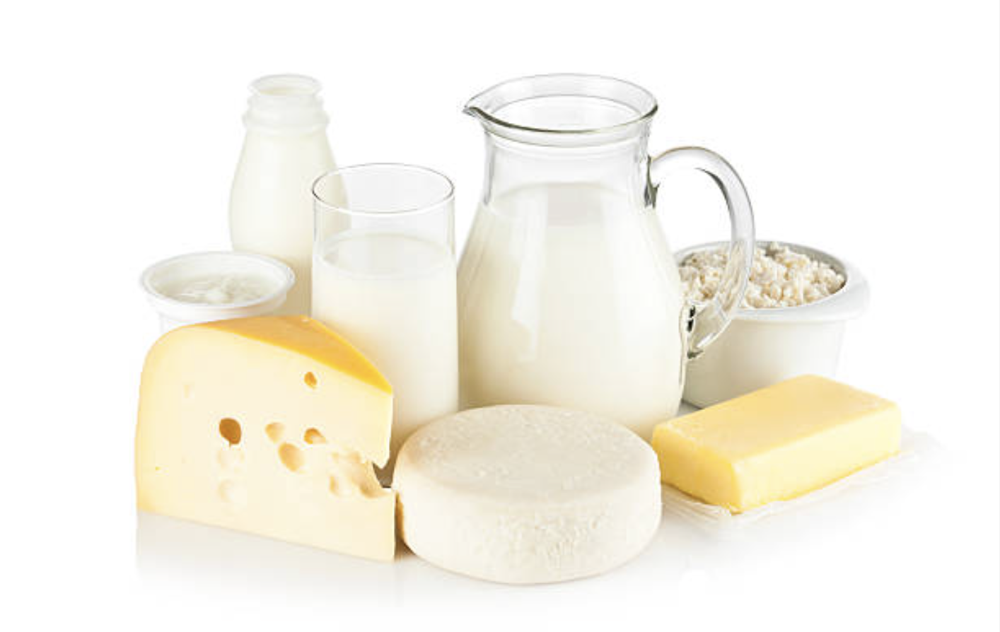
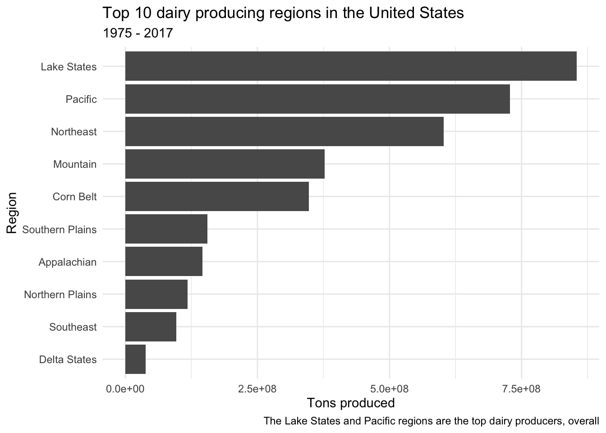
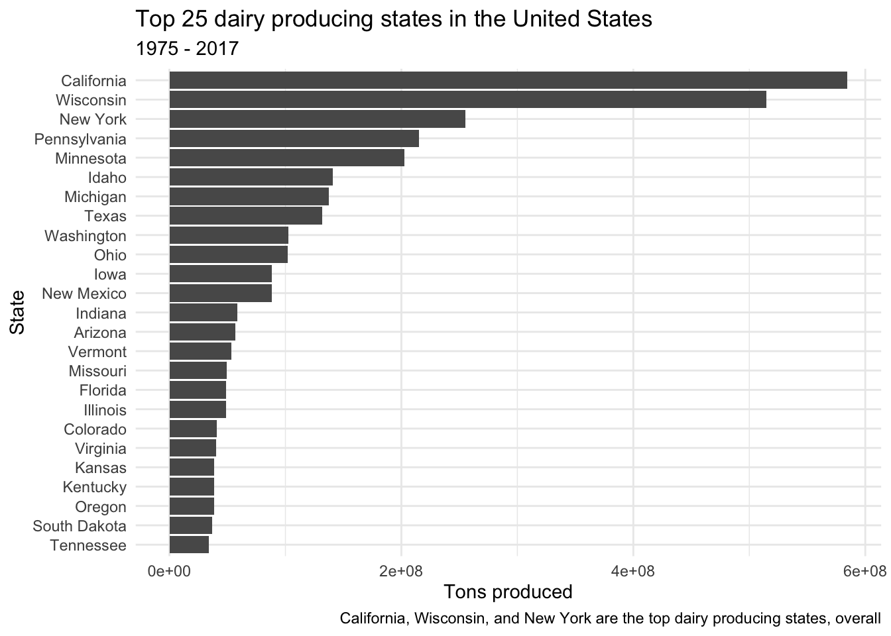
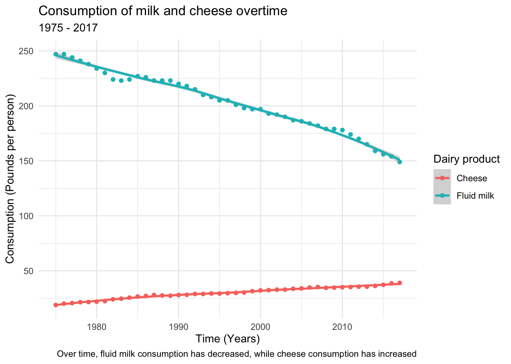
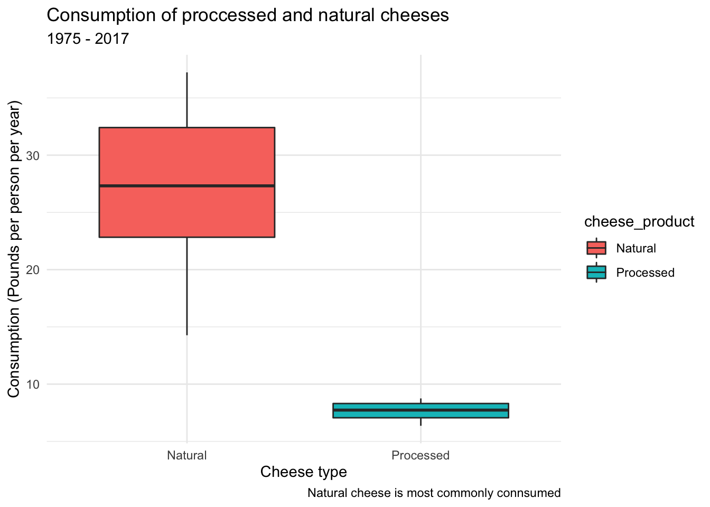
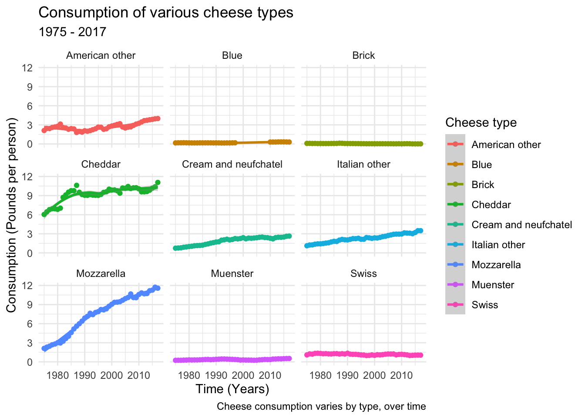

library(here)
library(readxl)
library(tidyverse)
library(stringr)
library(lubridate)
library(tidytuesdayR)Example analysis
Dairy production and consumption: How have they changed overtime?

Intended audience: Policy makers, government agencies, dairy farmers, the general public
Data and data directory: The original data are from the USDA (United States Department of Agriculture). The data are also accessible via TidyTuesday.
https://www.ers.usda.gov/data-products/dairy-data/documentation/#Loc3 https://github.com/rfordatascience/tidytuesday/tree/master/data/2019/2019-01-29
R packages
Load data
The original data and data dictionaries can be found here: https://github.com/rfordatascience/tidytuesday/tree/master/data/2019/2019-01-29
if(!file.exists(here("data", "milk_products_facts.RDS"))){
milk_products_facts <- readr::read_csv('https://raw.githubusercontent.com/rfordatascience/tidytuesday/master/data/2019/2019-01-29/milk_products_facts.csv')
clean_cheese <- readr::read_csv('https://raw.githubusercontent.com/rfordatascience/tidytuesday/master/data/2019/2019-01-29/clean_cheese.csv')
state_milk_production <- readr::read_csv('https://raw.githubusercontent.com/rfordatascience/tidytuesday/master/data/2019/2019-01-29/state_milk_production.csv')
saveRDS(milk_products_facts, file = here("data", "milk_products_facts.RDS"))
saveRDS(clean_cheese, file = here("data", "clean_cheese.RDS"))
saveRDS(state_milk_production, file = here("data", "state_milk_production.RDS"))
}
milk_products_facts <- readRDS(here("data", "milk_products_facts.RDS"))
clean_cheese <- readRDS(here("data", "clean_cheese.RDS"))
state_milk_production <- readRDS(here("data", "state_milk_production.RDS"))Wrangle data
# milk_products_facts
milk_products_facts <- milk_products_facts %>%
rename("Fluid milk" = fluid_milk) %>%
mutate(Cheese = cheese_american + cheese_cottage + cheese_other) %>%
pivot_longer(-year, names_to = "milk_product", values_to = "consumption")
milk_products_facts$milk_product <- milk_products_facts$milk_product %>%
str_replace_all("_", " ") %>%
str_to_sentence()
# clean_cheese
clean_cheese <- clean_cheese %>%
rename(Processed = `Total Processed Cheese Products`,
Natural = `Total Natural Cheese`,
year = Year) %>%
pivot_longer(-year, names_to = "cheese_product", values_to = "consumption") %>%
filter(year >= 1975)
clean_cheese$cheese_product <- clean_cheese$cheese_product %>%
str_to_sentence()
# state_milk_production
state_milk_production <- state_milk_production %>%
filter(year >= 1975) %>%
rename(milk_produced_lbs = milk_produced) %>%
mutate(milk_produced_tons = milk_produced_lbs/2000)Dairy production over time
By region
Which United States regions produced the most dairy in 1975?
region_milk_production_1975 <- state_milk_production %>%
filter(year == 1975) %>%
group_by(region) %>%
summarise(milk_production_tons_1975 = sum(milk_produced_tons))%>%
arrange(desc(milk_production_tons_1975)) %>%
slice(1:5)
knitr::kable(region_milk_production_1975)| region | milk_production_tons_1975 |
|---|---|
| Lake States | 16128500 |
| Northeast | 11777500 |
| Corn Belt | 7824000 |
| Pacific | 7164000 |
| Appalachian | 3976500 |
Which United States regions produced the most dairy in 2017?
region_milk_production_2017 <- state_milk_production %>%
filter(year == 2017) %>%
group_by(region) %>%
summarise(milk_production_tons_2017 = sum(milk_produced_tons))%>%
arrange(desc(milk_production_tons_2017)) %>%
slice(1:5)
knitr::kable(region_milk_production_2017)| region | milk_production_tons_2017 |
|---|---|
| Lake States | 25707500 |
| Pacific | 24447500 |
| Mountain | 17694000 |
| Northeast | 15645000 |
| Corn Belt | 9098000 |
Which United States regions produced the most milk overall?
state_milk_production %>%
group_by(region) %>%
summarise(total_region_tons = sum(milk_produced_tons))%>%
arrange(desc(total_region_tons)) %>%
slice(1:10) %>%
mutate(region_order = fct_reorder(region, total_region_tons)) %>%
ggplot(aes(region_order, total_region_tons)) +
geom_col() +
coord_flip()+
labs(
title = "Top 10 dairy producing regions in the United States",
subtitle = "1975 - 2017",
caption = "The Lake States and Pacific regions are the top dairy producers, overall",
y = "Tons produced",
x = "Region") +
theme_minimal()
By state
Which states in the United States produced the most dairy in 1975?
state_milk_production_1975 <- state_milk_production %>%
filter(year == 1975) %>%
group_by(state) %>%
summarise(milk_production_tons_1975 = sum(milk_produced_tons))%>%
arrange(desc(milk_production_tons_1975)) %>%
slice(1:5)
knitr::kable(state_milk_production_1975)| state | milk_production_tons_1975 |
|---|---|
| Wisconsin | 9450000 |
| California | 5426500 |
| New York | 4982000 |
| Minnesota | 4473000 |
| Pennsylvania | 3570000 |
Which states in the United States produced the most dairy in 2017?
state_milk_production_2017 <- state_milk_production %>%
filter(year == 2017) %>%
group_by(state) %>%
summarise(milk_production_tons_2017 = sum(milk_produced_tons))%>%
arrange(desc(milk_production_tons_2017)) %>%
slice(1:5)
knitr::kable(state_milk_production_2017)| state | milk_production_tons_2017 |
|---|---|
| California | 19899000 |
| Wisconsin | 15160000 |
| New York | 7456000 |
| Idaho | 7313500 |
| Texas | 6027000 |
Which states in the United States produced the most dairy overall?
# state_milk_production %>%
# filter(year == 1975 | year == 2017) %>%
# ggplot(aes(year, milk_produced_tons))+
# geom_boxplot()
state_milk_production %>%
group_by(state) %>%
summarise(total_state_tons = sum(milk_produced_tons))%>%
arrange(desc(total_state_tons)) %>%
slice(1:25) %>%
mutate(state = fct_reorder(state, total_state_tons)) %>%
ggplot(aes(state, total_state_tons)) +
geom_col() +
coord_flip()+
labs(
title = "Top 25 dairy producing states in the United States",
subtitle = "1975 - 2017",
caption = "California, Wisconsin, and New York are the top dairy producing states, overall",
y = "Tons produced",
x = "State") +
theme_minimal()
Dairy production has increased over time
Wisconsin, Califorina, and New York are the top dairy producing states and located in the top dairy producing regions: the Lake States, Pacific, and Northeast, respectively.
Dairy consumption overtime
milk_products_facts %>%
filter(milk_product == "Fluid milk" | milk_product == "Cheese") %>%
ggplot(aes(year, consumption)) +
geom_point(aes(color = milk_product)) +
geom_smooth(aes(color = milk_product))+
labs(
title = "Consumption of milk and cheese overtime",
subtitle = "1975 - 2017",
caption = "Over time, fluid milk consumption has decreased, while cheese consumption has increased",
x = "Time (Years)",
y = "Consumption (Pounds per person)") +
labs(color = "Dairy product") +
theme_minimal() +
theme(legend.background=element_blank(),
legend.key = element_blank())
Dairy consumption trends vary by product type
Milk consumption has decreased, while cheese consumption has increased over time.
Is natural or processed cheese more commonly consumed?
clean_cheese %>%
filter(cheese_product == "Processed" | cheese_product == "Natural") %>%
ggplot(aes(cheese_product, consumption)) +
geom_boxplot(aes(fill = cheese_product)) +
labs(
title = "Consumption of proccessed and natural cheeses",
subtitle = "1975 - 2017",
caption = "Natural cheese is most commonly connsumed",
x = "Cheese type",
y = "Consumption (Pounds per person per year)") +
labs(color = "Cheese type") +
theme_minimal()
Is a certain type of cheese driving the increased rates consumption?
clean_cheese %>%
filter(cheese_product == "Cheddar" | cheese_product == "American other" | cheese_product == "Mozzarella" | cheese_product == "Italian other" | cheese_product == "Swiss" | cheese_product == "Brick" | cheese_product == "Muenster" | cheese_product == "Cream and neufchatel" | cheese_product == "Blue")%>%
ggplot(aes(year, consumption)) +
geom_point(aes(color = cheese_product)) +
geom_smooth(aes(color = cheese_product))+
labs(
title = "Consumption of various cheese types",
subtitle = "1975 - 2017",
caption = "Cheese consumption varies by type, over time",
x = "Time (Years)",
y = "Consumption (Pounds per person)") +
labs(color = "Cheese type") +
theme_minimal() +
theme(legend.background=element_blank(),
legend.key = element_blank()) +
facet_wrap(vars(cheese_product))
Results summary
Milk production has increased over time. Wisconsin, Califorina, and New York are the top milk producing states and located in the top milk producing regions: the Lake States, Pacific, and Northeast, respectively. Interestingly, fluid milk consumption has decreased, while cheese consumption has increased over time. Increased cheese consumption appears to be primarily driven by the consumption of natural cheeses, and especially mozzarella. In the 1970s the an average person consumed less than 3 pounds of mozzarella per year; whereas, in 2017 the average person consumed nearly 12 pounds of mozzarella per year.
Conslusions
Overall, the results suggesting that production (supply) has continued to increase while consumption (demand) has decreased seem paradoxical; however there are other factors to consider. For decades, the U.S. government has subsidized the production of milk, regardless of consumer demand (1). This is one explanation for increased production but decreased consumption of dairy. However, what’s leading to decreases in consumption? Lactose intolerance is prevalent, ranging from ~20-80% of the population and varying by ethnic group (2). While these percentages have remained constant, we are becoming ever more aware that diet is related to health status (3). Lactose intolerance and consumption of dairy in general have been linked to inflammation and various diseases (4, 5). This has garnered significant public attention, yet many study results are contradictory and lead to confusion (4). One possible explanation for increased cheese intake is that cheese is often better tolerated by lactose intolerant individuals because the fermentation process, necessary to make cheese from milk, results in decreased lactose content (6). More research into the immune modulating properties of food is required to better elucidate the relationship between dairy and health.
Functions used
dplyr
- filter
- rename
- mutate
- group_by
- summarise
- arrange
- slice
tidyr
- pivot_longer
ggplot2
- geom_col
- geom_point
- geom-smooth
- geom-boxplot
stringr
- str_replace_all
- str_to_sentence
References
1.
USDA. Dairy programs.
2.
Scrimshaw NS, Murray EB. 1988. The acceptability of milk and milk products in populations with a high prevalence of lactose intolerance. The American journal of clinical nutrition 48:1142–1159.
3.
Micha R, Peñalvo JL, Cudhea F, Imamura F, Rehm CD, Mozaffarian D. 2017. Association between dietary factors and mortality from heart disease, stroke, and type 2 diabetes in the united states. Jama 317:912–924.
4.
Bordoni A, Danesi F, Dardevet D, Dupont D, Fernandez AS, Gille D, Nunes dos Santos C, Pinto P, Re R, Rémond D, others. 2017. Dairy products and inflammation: A review of the clinical evidence. Critical reviews in food science and nutrition 57:2497–2525.
5.
Ulven SM, Holven KB, Gil A, Rangel-Huerta OD. 2019. Milk and dairy product consumption and inflammatory biomarkers: An updated systematic review of randomized clinical trials. Advances in Nutrition 10:S239–S250.
6.
Solomons N. 2002. Fermentation, fermented foods and lactose intolerance. European journal of clinical nutrition 56:S50–S55.